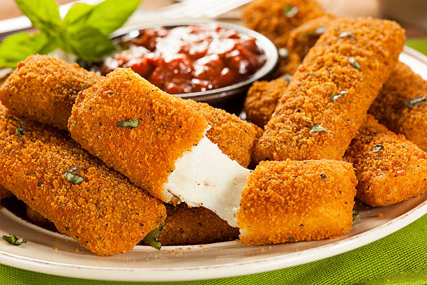

Mozzarella Sticks

Description
Why go to IHOP or Denny's when you can make these delicious fried mozzarella sticks at home! These won't disappoint, as the ingredients have been catered to having a more authentic taste.
Ingredients
- 2 large eggs, beaten
- 1/4 cup water
- 1 1/2 cups Italian seasoned bread crumbs
- 1/2 teaspoon garlic salt
- 2/3 cup all-purpose flour
- 1/3 cup cornstarch
- 2 cups oil for frying, or as needed
- 1 (16 ounce) package mozzarella cheese sticks
Steps
- Gather all ingredients
- Whisk water and eggs together in a small bowl. Mix bread crumbs and garlic salt together in a medium bowl. Blend flour and cornstarch together in a third bowl
- Heat oil to 365 degrees F (185 degrees C) in a large, heavy saucepan.
- Dredge a mozzarella stick in flour; shake off excess. Dip into egg mixture. Lift up so excess egg drips back in the bowl. Press into bread crumbs to coat. Place breaded mozzarella stick on a plate or wire rack. Repeat with remaining mozzarella sticks
- Use a spider spoon or a pair of tongs to lower 3 to 4 mozzarella sticks into the hot oil. Fry until golden brown, about 30 seconds. Remove from heat and drain on paper towels. Repeat to fry remaining mozzarella sticks
- Serve hot and enjoy!